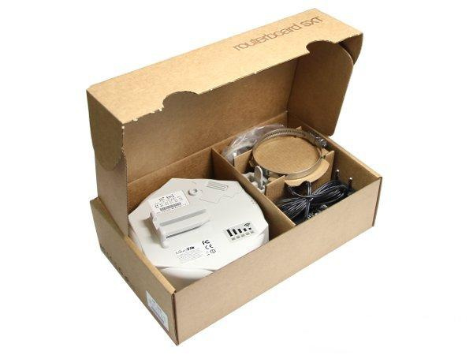
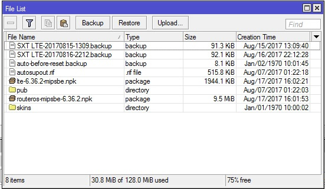
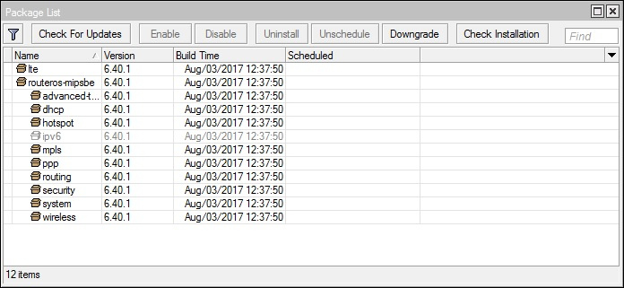
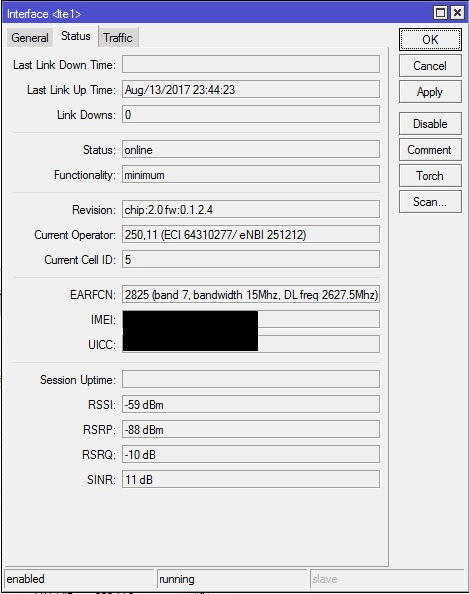
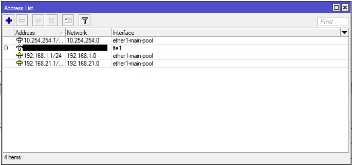
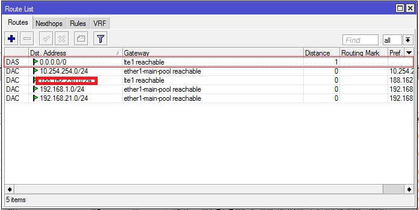
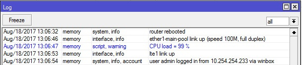

Подводные камни настройки Mikrotik SXT LTE
Доброго времени суток Хабр, попытаюсь рассказать о своём знакомстве с такой вещью, как Mikrotik SXT LTE, муках настройки и последующего доведения до ума.

Немного предыстории:
Своё знакомство с Mikrotik и RouterOS начал около двух лет назад, имеется сертификат MTCNA, планирую в ближайшее время получить MTCRE и MTCWE. За это время я не устаю восхищаться оборудованием Mikrotik за их функциональность. В основном работал с представителями линейки RouterBoard 7xx и 9xx, так как их возможностей и мощностей всегда хватало, до недавних пор.
Недавно появился следующий объект — нефтебаза с довольно развитой сетевой инфраструктурой: локальный домен, АТС (Asterisk FreePBX), соответственно SIP-телефония, Wifi-мосты, куча сетевых видеорегистраторов и специализированное оборудование автоматики, управлял этим всем Zyxel ZyWALL USG 20. Узким местом этого всего было отсутствие проводного интернета, доступ к нему осуществлялся посредством LTE, через худо-бедно работающий Zyxel LTE6100. Периодическое «отвалы» lte для него было нормой, иногда только ребут помогал восстановить связь, радости не добавлял так же «деревянный» и слабо-отзывчивый интерфейс Zyxel'я.
В итоге, через некоторое время и довольно большое количество накопившихся жалоб было решено искать альтернативу. Взгляд сразу упал на Mikrotik SXT LTE потому что:
— 2 в 1, заменял собой сразу 2 железки — роутер и lte-модем;
— RouterOS и её богатые возможности по реализации различных хотелок;
Выбор прошивки:
Прибывшая железка несла в себе RoS версии 6.36.2, по привычке я сразу обновил её до свежей, на тот момент, current 6.40. Это была моя первая ошибка, усложнившая мне задачу, уже на месте в «полевых» условиях. Я не проверил работоспособность LTE на рабочим месте в комфортных условиях, так элементарно под рукой не оказалось SIM-карты с поддержкой LTE. В результате, уже на объекте, меня ждало удивление, когда SXT ни в какую не хотела видеть сигнал с базовой станции, что на «дефолтной», что на пустой конфигурации. Пришлось спешно откатываться на «коробочную» версию RoS, качая её через мобильный интернет. Тогда же пришло осознание того, что пакет lte не входит в Main package — набор RoS и помимо его необходимо загрузить Extra packages.
Загружаем routeros-mipsbe-x.xx и lte-х.хх-mipsbe в память микротика (вкладка Files в меню winbox'а):

Далее System — Packages и нажимаем Downgrade. Микротик попросит разрешение на перезагрузку для отката на более старую версию RoS, нажимаем Yes.

После отката не стал сбрасывать сразу настройки в 0, а предпочел проверить на дефолтной. Убедившись, что lte-интерфейс поднялся и подключился к базовой станции, можно вернуться к пустой конфигурации и продолжить настройку.
Стоит сделать ремарку, что на данный момент SXT LTE работает на последней версии RoS 6.40.1, к которой я пришел постепенно, обновляя на последующие версии, начиная с 6.36 и тестируя стабильность, находясь непосредственно на объекте.
При выбору конфигурации, я всегда выбираю пустую — она позволяет настроить все необходимые параметры самостоятельно, в отличие от дефолтной, которая не всегда гарантирует работоспособность устройства по назначению, а иногда может приводить к определённым проблемам.
Настройка LTE-интерфейса:
Для начало нам необходимо определиться с частотой LTE frequency band, у каждого оператора она своя, у Yota это band 7.
Далее пишем в терминале:
/interface lte set lte1 band=7 network-mode=lte add-default-route=yes use-peer-dns=yes
где:
lte1 — имя вашего lte интерфейса
band — frequency band
network-mode — режим работы
add-default-route — добавляем дефолтный маршрут для роутинга
use-peer-dns — используем DNS-сервер оператора
В лучшем случае все настройки Mikrotik подцепляет автоматически, но мне пришлось настраивать вручную.
В практике настройки серии Routeroard для получения IP-адреса от провайдера необходимо настроить Mikrotik, как DHCP клиента:
/ip dhcp-client add interface=имя_gateway_интерфейса
Но при работе с SXT LTE, Mikrotik получил IP-адрес и DNS от провайдера автоматически, без дополнительных манипуляций.
Далее проверяем статус LTE:

наличие на LTE-интерфейсе IP от оператора во вкладке IP — Adresses:

и наконец наличие дефолтного маршрута:

Если его нет, добавляем вручную:
/ip route add dst-address=0.0.0.0/0 gateway=lte distance=1
Всё что остаётся, это дать пользователям доступ в интернет:
/ip firewall nat add chain=srcnat action=masquerade out-interface=lte1
На этом базовая настройка Mikrotik SXT LTE закончена, далее пойдут специфические задачи и проблемы, которые мне приходилось решать по необходимости и факту возникновения.
Больше одной подсети:
Так сетевая инфраструктура на объекте достаточно развита, у неё было 3 подсети для различных назначений:
Т.к. SXT LTE имеет только один ethernet-интерфейс я достаточно долго думал, как осуществлять маршрутизацию между подсетями, даже смотрел в сторону VLAN'ов. Всё оказалось просто, достаточно присвоить интерфейсу несколько ip-адресов, которые являются шлюзом у устройств подсетей:
/ip address
add address=10.254.254.1/24 network=10.254.254.0 interface=ether1-main-pool
add address=192.168.21.1/24 network=192.168.21.0 interface=ether1-main-pool
add address=192.168.1.1/24 network=192.168.1.0 interface=ether1-main-pool
DNS Flood:
SXT LTE имеет достаточно слабый ЦП, о чём мне напомнили буквально на следующий день после установки. Сотрудники жаловались на плохую работу сети, а я в свою очередь никак не мог подключиться удаленно на Mikrotik, хотя winbox не дропал меня сразу, а пытался залогиниться. Приехав на место, обнаружил загруженность CPU процессора под 100%. С помощью встроенной в RoS утилитки Tools — Profile обнаружил, что процессор загружен обработкой DNS-запросов. И осознал ещё одну свою ошибку, забыв отключить обработку DNS запросов с внешки.
/ip dns set allow-remote-requests=no
или с помощью firewall'а:
/ip firewall raw
add action=add-src-to-address-list address-list="dns flood" address-list-timeout=1d chain=\prerouting dst-port=53 in-interface=lte1 protocol=udp
/ip firewall filter
add action=drop chain=input dst-port=53 in-interface=lte1 protocol=udp src-address-list="dns flood"
add action=drop chain=input connection-state=new dst-port=53 in-interface=lte1 protocol=udp
add action=drop chain=input connection-state=new dst-port=53 in-interface=lte1 protocol=tcp
CPU Overloaded:
Mikrotik никак не фиксирует высокую нагрузку на процессор, поэтому чтобы в будущем контролировать высокую загрузку CPU и решать её, мне помог встроенный язык для написания скриптов:
:global cpu1 [/system resource get cpu-load];
if (($cpu1) >= 90) do={:log warning "CPU load = $cpu1 %"} else={}
Выглядит примерно так:

Для удобства все логи отправляются в syslog, чтобы не заполнять flash-память Mikrotik'а и не потерять их при ребуте.
LED индикатор
При установке пустой конфигурации, сбрасываются и настройки LED-индикаторов LTE-интерфейса, восстанавливаются при помощи следующих команд:
/system leds
add leds=led1 type=modem-signal interface=lte1 modem-signal-treshold=-91
add leds=led2 type=modem-signal interface=lte1 modem-signal-treshold=-81
add leds=led3 type=modem-signal interface=lte1 modem-signal-treshold=-71
add leds=led4 type=modem-signal interface=lte1 modem-signal-treshold=-61
add leds=led5 type=modem-signal interface=lte1 modem-signal-treshold=-51
Дроп LTE-интерфейса:
К сожалению одна из нерешённых проблем SXT LTE, вызванной высокой нагрузкой UDP-трафика, о которой разработчики упомянули на форуме:
Yes, it looks like the specific issue sometimes happens on this particular product, we are looking into it. It looks like other LTE modems and wAP LTE does not have this issue. The problem on SXT LTE takes place under heavy UDP traffic, but we are still investigating.
Пару раз ловил исчезновение lte-интерфейса, соответственно отсутствие интернета на объекте. Но по истечении пары минут интерфейс появлялся снова, так что простои были не критичны. Пока жду новую версию RouterOS, которая исправит эту проблему.
Вот с чем мне пришлось столкнуться, внедряя специфичную, для меня, «железку», а заодно и почерпнуть кое-что новое. Но этим Mikrotik и хорош, что предоставляет инструменты для решения появившихся проблем.